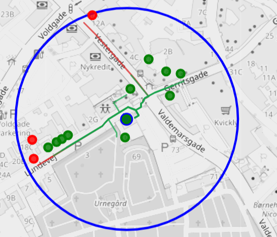

Which Locations Are Actually Near a Site?
Proximity is defined by the travel network, not by visual closeness on a map.

Many geographic decisions begin with a simple rule: count the locations within $r$ metres of a site. The rule becomes less obvious when “within” means walking, driving or cycling distance.
Rivers, railways, one-way streets and missing crossings can make nearby points far apart on the network. Visual closeness is therefore not a reliable accessibility measure.
The engine takes sources $S$ and weighted targets $T$ and classifies every ordered pair $(s,t)$ by its shortest feasible route distance.
This supports relation-level questions—which target is close to which source?—and aggregate questions—how much weighted opportunity lies within the radius?
The relevant object is not a circular buffer on a map. It is a reachability relation induced by a directed network and a chosen travel profile.
Decision outputs
Scope
The algorithm is deliberately generic. A source may be a proposed site, a lead address, a depot or a public-service facility.
A target may be a residence, a comparable store, a customer or another weighted point of interest. The radius and OSRM profile make the same method usable for walking, driving and cycling accessibility.